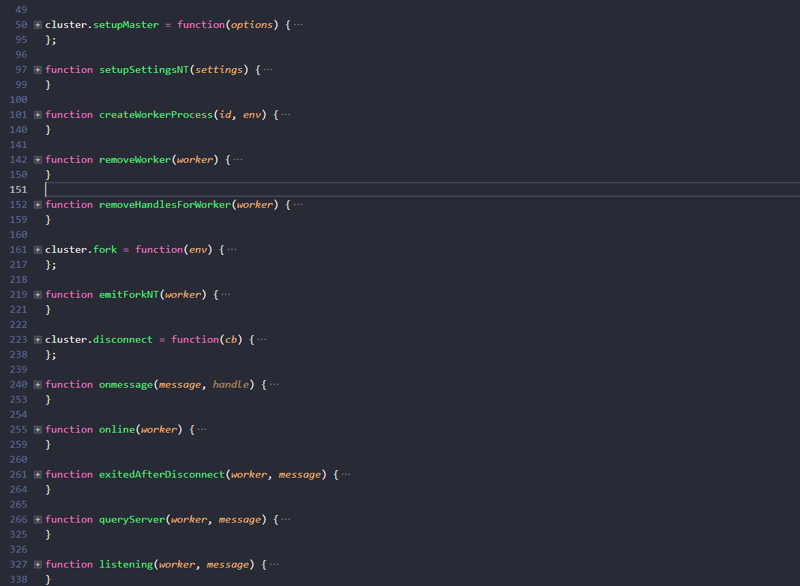
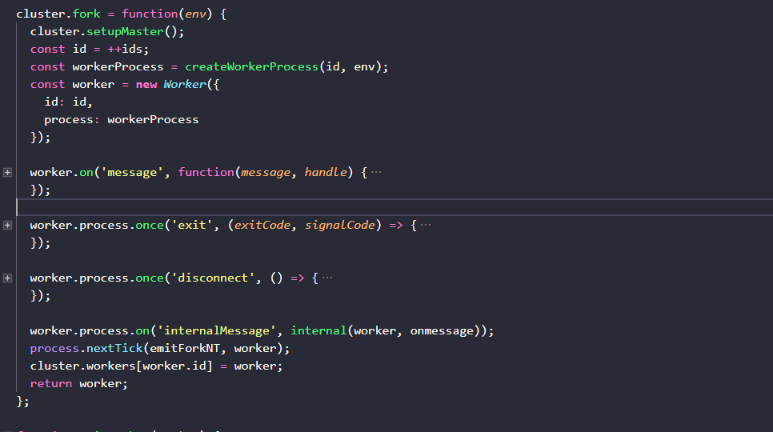
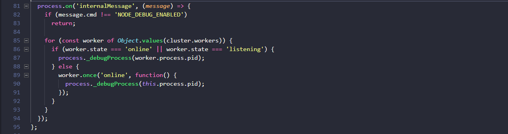
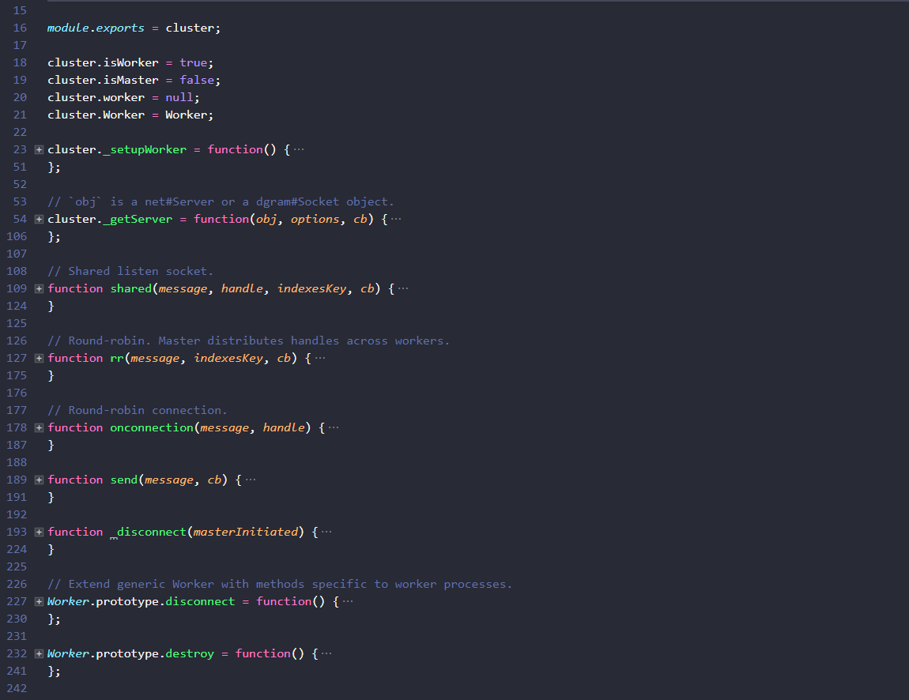

原文连接:https://www.cnblogs.com/dashnowords/p/10958457.html

示例代码托管在：https://www.github.com/dashnowords/blogs
博客园地址：《大史住在大前端》原创博文目录
华为云社区地址：【你要的前端打怪升级指南】
一. 概述
cluster模块是node.js中用于实现和管理多进程的模块。常规的node.js应用程序是单线程单进程的，这也意味着它很难充分利用服务器多核CPU的性能，而cluster模块就是为了解决这个 问题的，它使得node.js程序可以以多个实例并存的方式运行在不同的进程中，以求更大地榨取服务器的性能。node.js在官方示例代码中使用worker实例来表示主进程fork出的子进程，使得前端开发者在学习过程中非常容易和浏览器环境中的worker实现的多线程混淆。为了容易区分，我们和node官方文档使用一致的名称，用集群中的master和worker来区分主进程和工作进程，用worker_threads来描述工作线程。
node.js的主从模型中，master主进程相当于一个包工头，主管监听端口，而slave进程被用于实际的任务执行，当任务请求到达后，它会根据某种方式将连接循环分发给worker进程来处理。理论上，如果根据当前各个worker进程的负载状况或者相关信息来挑选工作进程，效率应该比直接循环发放要更高，但node.js文档中声明这种方式由于受到操作系统调度机制的影响，会使得分发变得不稳定，所以会将"循环法"作为默认的分发策略。
关于cluster模块的用法和API细节，可以直接参考官方文档《Node.js中文网V10.15.3/cluster》。
二. 线程与进程
想要尽可能利用服务器性能，首先需要了解“线程”（thread）和“进程”（process）这两个概念。
计算机是由CPU来执行计算任务的，如果你只有一个CPU，那么这台机器上所有的任务都将由它来执行。它既可以按照串联执行的原则一个接一个执行任务，也可以依据并联原则同步执行多个任务，多个任务同步执行时，CPU会快速在多个线程之间进行切换，切换线程的同时要切换对应任务的上下文，这就会造成额外的CPU资源消耗，所以当线程数量非常多时，线程切换本身就会浪费大量的CPU资源。如果在执行一个任务的同时，CPU和内存都还有充足的剩余，就可以通过某种方式让它们去执行其他任务。
你可以将“线程”看作是一种轻量级的“进程”。
如果你在操作系统中打开任务管理器，在进程标签下就可以看到如下图的示例：
我们可以看到每一个程序至少开辟一个新的进程（你可能瞬间就明白了chrome效率高的原因，我什么都没说），它是一种粒度更大的资源隔离单元，进程之间使用不同的内存区域，无法直接共享数据，只能通过跨进程通讯机制来通讯，而且由于要使用新的内存区域，它的创建销毁和切换相对而言都更耗时，它的好处就是进程之间是互相隔离的，互不影响，所以你可以一边听音乐一边玩游戏，而不会因为音乐软件里突然放了一首轻音乐，结果你游戏里的角色攻击力减半了。
再来看一下性能这个标签：

可以看到线程数是远大于进程数的。“线程”通常用来在单个“进程”中提高CPU的利用率，它是一种粒度更细的资源调度单位，它更容易创建和销毁，在同一个进程内的线程共享分配给这个进程的内存，所以也就实现了共享数据，多线程的编程要更加复杂，由于共享数据，如果线程之间传递指针然后操作同一数据源，就必须考虑“原子操作”和“锁”的问题，否则很容易就乱套了，如果传递数据的拷贝，又会造成内存浪费，另外线程异常不会被隔离，而会导致整个进程异常。
线程和进程的相关知识涉及到底层操作系统的内容，笔者涉猎有限，先分享这么多（会的都告诉你了，还要我怎样）。
三. cluster模块源码解析
源码中个别方法比较长，建议使用带有代码折叠的工具来看。
3.1 起步
cluster模块的用法看起来并不复杂，官方给出的示例是这样的：
const cluster = require('cluster');
const http = require('http');
const numCPUs = require('os').cpus().length;
if (cluster.isMaster) {
console.log(`主进程 ${process.pid} 正在运行`);
// 衍生工作进程。
for (let i = 0; i < numCPUs; i++) {
cluster.fork();
}
cluster.on('exit', (worker, code, signal) => {
console.log(`工作进程 ${worker.process.pid} 已退出`);
});
} else {
// 工作进程可以共享任何 TCP 连接。
// 在本例子中，共享的是 HTTP 服务器。
http.createServer((req, res) => {
res.writeHead(200);
res.end('你好世界\n');
}).listen(8000);
console.log(`工作进程 ${process.pid} 已启动`);
}3.2 入口
cluster模块的入口在/lib/cluster.js，这里的代码很简单：
'use strict';
const childOrMaster = 'NODE_UNIQUE_ID' in process.env ? 'child' : 'master';
module.exports = require(`internal/cluster/${childOrMaster}`);可以看到，如果进程对象的环境变量中有NODE_UNIQUE_ID这个变量，就透传internal/cluster/child.js模块的输出，否则就透传internal/cluster/master.js模块的输出。这是node的主进程在进行子进程管理时的标识，后面的代码中可以看到当调用cluster.fork( )生成一个子进程时会以一个自增ID的形式生成这个环境变量。
3.3 主进程模块master.js
首先运行node程序的肯定是主线程，那么我们从master.js这个模块开始，先用工具折叠一下代码浏览一下：

可以看到除了模块属性外，cluster模块对外暴露的方法只有下面3个，其他的都是用来完成内部功能的：
setupMaster(options )-修改fork时默认设置fork( )-生成子进程disconnect( )- 断开和所有子进程的连接
我们按照官方示例的逻辑路线来阅读代码cluster.fork( )方法定义在161-217行，一样是用折叠工具来看全貌：

可以看到cluster.fork( )执行时做了如下几件事情：
1.设置主线程参数
2.传入一个自增参数id(就是前文提到的NODE_UNIQUE_ID)和环境信息env来生成一个worker线程的process对象
3.将id和新的process对象传入Worker构造器生成新的worker进程实例
4.在子进程的process对象上添加了一些事件监听
5.在cluster.workers中以id为键添加对子进程的引用
6.返回子进程worker实例接着看第一步setupMaster( )，在源码中50-95行，着重看81-95行：

留意一下主线程在进程层面监听的internalMessage事件非常关键，主进程监听到这个事件后，首先判断消息对象的cmd属性是否为NODE_DEBUGE_ENABLED，并以此为条件判断后续语句是否执行，后续的逻辑是遍历每一个worker进程实例，如果子进程的状态是online或listening就将子进程pid作为参数调用主进程的_debugProcess( )方法，否则改为在worker进程实例首次上线时调用。
process._debugProcess的定义在src/node_process_methods.cc里，看名字推测大致的意思就是为了启用对子进程的调试功能。这是一个重载方法，在windows和linux下有不同的实现。linux下的代码较短，基本可以看懂（不秀一下怎么对得住自己看1周的C++）：
#ifdef __POSIX__
static void DebugProcess(const FunctionCallbackInfo<Value>& args) {
//这里的常量参数是通过地址引用的worker.process.pid
Environment* env = Environment::GetCurrent(args);
//用pid做参数获取当前激活的环境变量，这一步应该是在获取上下文
if (args.Length() != 1) {//不合法调用时报错，没什么可说的
return env->ThrowError("Invalid number of arguments.");
}
CHECK(args[0]->IsNumber());//检测参数
pid_t pid = args[0].As<Integer>()->Value();
int r = kill(pid, SIGUSR1);//发送SIGUSR1信号，终止了这个子进程
if (r != 0) {//exit code为0时是正常退出，子进程未能正常中止时报错
return env->ThrowErrnoException(errno, "kill");
}
}win32平台中对应的代码比较长，看不懂。总结一下这里就是，在没有收到cmd属性等于NODE_DEBUG_ENABLED的内部消息之前，什么都不做，如果收到这个消息，就终止所有的子进程，或者通过事件在子进程第一次处于online状态就终止它。
按照执行顺序接下来是101-140行的createWorkerProcess(id,env)方法，看名字就知道是生成子进程process对象的，前半部分合并和处理环境参数，然后判断运行参数中是否包含启用--inspect功能的参数并进行一些处理，最后传入一堆参数调用了fork方法，这个方法就是child_process.fork( )，它就是用来生成子进程的，返回值就是子进程实例，你可以先简单浏览一下API【官方文档child_process.fork功能】，或者知道这里生成了子进程就好。
回到cluster.fork方法继续执行，下一步使用新生成的子进程process对象和唯一id作为参数传入Worker构造函数，生成worker实例,Worker的定义就在当前文件夹的worker.js中，它首先继承了EventEmitter的消息的发布订阅能力，然后把子进程的process对象挂在在自己的process属性上，接着为子进程添加error和 message事件的监听，最后暴露了一些更语义化的针对进程实例的管理方法（更详细的分析可以参考本系列前一篇博文）。生成了worker进程实例后，添加了对于message事件的响应，并在子进程process对象上监听进程的exit,disconnect,internalMessage事件，最后将worker实例和自己的id以键值对的形式添加到cluster.workers中记录，并通过return返回给外界，至此master模块的初始化流程就告一段落，先mark一下，后面还会讲这里。
3.4 子进程模块child.js
子进程模块是从master.js调用child_process时启动的，它和主进程是并行执行的。老规矩，代码折叠看一下：

看出什么了吗？child.js的代码里只有引用和定义，_setupWorker是在nodejs工作进程初始化时执行的，它在自己的独立进程中初始化了一个进程管理实例，并执行了下述逻辑：
1.实例化进程管理对象worker
2.全局添加`disconnect`事件响应
3.全局添加`internalMessage`事件响应，主要是分发`act:newconn`和`act:disconnect`事件
4.用send方法发送`online`事件，通知主线程自己已上线。注意，这个process对象就是IPC(Inter Process Communication,也称为跨进程通讯)能够实现的关键，很明显它继承了EventEmitter的消息收发能力，在子进程内部进行消息收发不存在任何问题，还记得master.js中fork方法吗？这个process就是调用child_process启动子进程时返回给主进程的那个process对象，当你在主进程中获取它后，就可以共享worker进程的消息能力，从而在资源隔离的条件下实现master和worker进程的跨进程通讯。_getServer( )方法是在建立server实例时调用的，等到驱动事件信息到达child.js时再看，可以留意一下最后两个添加在Worker原型方法上的方法，它们只在子进程中有效。
四. 小结
至此，你已经看到node是如何通过cluster模块实现多实例并初始化跨进程通讯了。但是跨进程通讯的底层实现以及服务器的建立，以及如何在进程间协调网络请求的处理，还依赖于net和http的一些内容，只好等研究完了再继续，硬刚反正我是吃不消的。